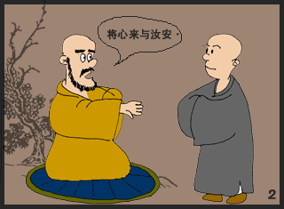

2006/3/11 0:57:54

风卷重云云逗雨
鲸翻恶浪浪腾天
蓬莱终化三杯土
阿鼻犹输九吊钱
无事商量非少劫
有情计较总多缘
茫茫欲海舟随系
一苇何曾到日边
2
清风逐袖似人闲
素影婆娑碧水湾
几处幽花添野趣
一春酥雨润天颜
扬眉便是声前句
触目无非末后关
莫作禅思深处会
云生空际幻斑斓
3
本地风光本地游
非污非净现头头
缘情天地皆精彩
逐梦英雄总自由
一样兴亡千样戏
这般岁月那般愁
长空倚剑披云啸
散作乾坤碧水流
4
红尘醉入几围城
刹那悲欢化酒倾
岁月歌回心远大
乾坤影动眼空明
皆缘皆我皆同病
非妄非真非二名
东海藏身山走马
天台华顶作么生
5
石虎松虬浴日眠
苔痕深浅径蜿蜒
孤峰有雾皆图画
空谷无风自管弦
照破山河光万叠
观成世界影三千
须弥顶没冰中火
劫海波随漏底船
6
秋深于水夕涨风
微蓝缥缈紫朦胧
千重影没乾坤幻
四起声浮今古空
恍觉燃灯汰孤寂
犹迷举指扣圆通
天心处处明如昼
一点冰花溅火红
7
渺渺天涯渺渺秋，痴云醉日半山流。
可怜一水横空去，万顷烟波不解愁。
8
万山风雨万山秋，浊水舂天碾地流。
一叶飘然沧海去，任凭欢喜任凭愁。
9
一天风雨一天秋，江海生涯任水流。
白鸟青山时入眼，乾坤无事落闲愁。
10
刹那春光刹那秋，乾坤何处不风流。
眼声耳色横今古，谁赋新词谁说愁？
11
渺渺天涯渺渺秋，乾坤一水古今流。
巫云楚雨催昏晓，半入相思半入愁。
12
乾坤梦入几春秋，刹那风云岁月流。
剑胆琴心横浩气，须弥踏破死生愁。
13
一生风雨一生秋，天地虚舟清浊流。
岂逐白鸥湖海梦，红尘随处入穷愁。
14
磕破山春复海秋，一尘天地竞风流。
耳声眼色成今古，日月低昂愁底愁？
15
渺渺天涯渺渺秋，绮霞烟水自空流。
谁怜西岭西风后，满地相思满地愁。
16
满城风雨满城秋，一水横空天地流。
独上孤峰倾百斗，披云啸尽古今愁。
17
一番风雨一番秋，依旧青山枕碧流。
溅血长虹贯天地，羲和鞭堕六龙愁。
18
万古长空春复秋，一朝风月乍星流。
乱峰深处斜阳下，木落花飞愁自愁。